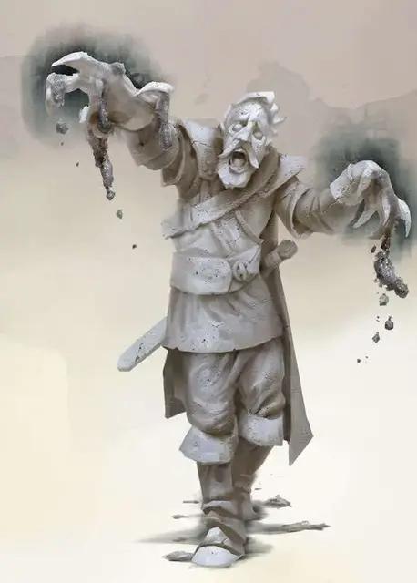

Окаменевший (Камнеклятый)
Stone Cursed
Средний Конструкт, законно-злой

Класс Доспеха 17 (Природный доспех)
Хиты 19 (3к8 + 6)
Скорость 10 футов
| мод | спас | ||
|---|---|---|---|
| СИЛ | 16 | +3 | +3 |
| ЛОВ | 5 | −3 | −3 |
| ТЕЛ | 14 | +2 | +2 |
| мод | спас | ||
|---|---|---|---|
| ИНТ | 5 | −3 | −3 |
| МДР | 8 | −1 | −1 |
| ХАР | 7 | −2 | −2 |
Уязвимость к урону дробящий
Иммунитет к урону яд
Иммунитет к состояниям окаменение, отравление, очарование, испуг, истощение
Чувства пассивное Восприятие 9
Языки все, известные при жизни
Опасность 1 (200 опыта)
Бонус мастерства +2
Среда обитания Город, Горы, Пустыня
Особенности
Хитрый оппортунист. Окаменевший совершает с преимуществом провоцированные атаки.
Обманчивая внешность. Пока окаменевший не двигается, он неотличим от обычной статуи.
Загадочный шёпот. Несмотря на то, что существа, превращённые в окаменевших, уже давно мертвы, внутри обсидиановых черепов слышен расплывчатый шёпот их воспоминаний. В конце короткого отдыха, персонаж может совершить проверку Интеллекта (Магия) Сл 20, чтобы попытаться извлечь воспоминания из черепа...воспоминания которые являются вербальным ответом на заданный персонажем черепу вопрос. Как только эта проверка совершена, независимо, удачно или нет, череп больше невозможно использовать подобным образом.
Действия
Окаменяющие когти. Рукопашная атака оружием: +5 к попаданию, досягаемость 5 футов, одна цель. Попадание 8 (1к10 + 3) рубящего урона, или 14 (2к10 + 3) рубящего урона, если броски атаки были совершены с преимуществом. Если цель является существом, оно должно пройти спасбросок Телосложения Сл 12, иначе начнёт обращаться в камень, становясь опутанным до конца своего следующего хода, во время которого она должна повторить спасбросок. Эффект заканчивается в случае успешного спасброска; в противном случае существо превращается в камень на следующие 24 часа.
Описание
Окаменевший создаётся отвратительным алхимическим ритуалом, выполненным на окаменевшем гуманоиде. Ритуал, требующий смеси из крови василиска и пепла сожжённых перьев куролиска, пробуждает эхо духа окаменевшей жертвы, оживляя статую и превращая её в полезного хранителя.
Томящиеся духи. Окаменевшего влечёт злобное желание убивать всё живое, но они полностью верны тому, кто совершил обряд по оживлению их, и они подчиняются приказам этой личности в меру своих возможностей и способностей.
В бою, окаменевший выпускает из пальцев каменные когти, с которых капает густой серый осадок. Этот алхимический осадок превращает в статую любого, кого ранят эти когти.
Странный урожай.Как часть ритуала, приводящего к созданию окаменевшего, в торсе существа формируется обсидиановый череп размером с кулак. Череп не виден, пока окаменевший жив, но, когда убит, статуя разрушается и выпадает этот череп. Из-за связывающей алхимической нити, с помощью которой создавались эти существа, в черепе откликается слабое эхо воспоминаний первоначальной жертву ритуала. Умелый заклинатель может попытаться извлечь эти воспоминания и получить информацию о прошлом жертву, либо найти знания, что каким-то образом оказались утерянными.
Природа конструкта. Окаменевший не нуждается в воздухе, пище, питье или сне.